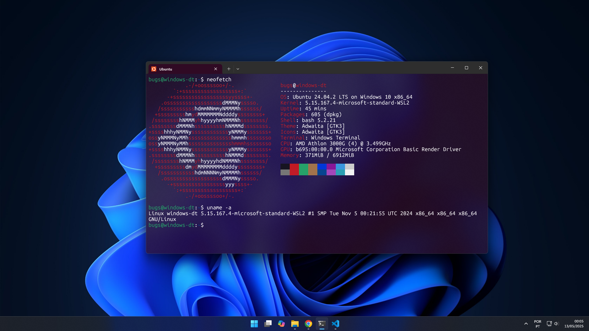
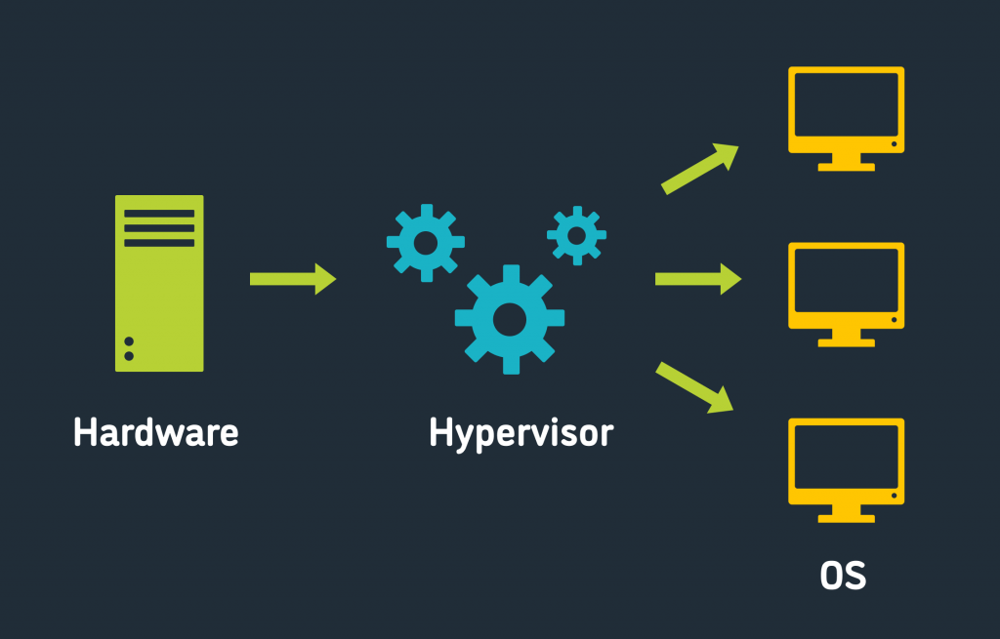

WSL para newbies
Neste post vamos falar de uma forma simples e direta o que é WSL e para que serve esta funcionalidade do Windows.
WSL é uma sigla que significa Windows Subsistem for Linux, ou seja um subsistema para Linux no Windows. Agora basta entender que um subsistema é um segundo sistema operacional que pode ser executado simultaneamente com o sistema operacional principal. Para quem sabe o que é uma maquina virtual, habitualmente referida por "Virtual Machine" ou "VM" fica fácil compreender como é possivel ter um sistema operacional rodando dentro de outro. Entretanto quando falamos "rodando dentro de outro" a palavra dentro não necessariamente faz jus ao que está realmente acontecendo.
Os sistemas atuais usam uma tecnologia chamada virtualização. Esta tecnologia é capaz de simular a existencia de componetes físicos, nos quais um novo sistema pode ser instalado. Os "hypervisors" são os responsáveis por esta parte crinado a gerenciando as maquinas virtuais e seus recursos de hardware como CPU memória e armazenamento.
Neste momento o Windows 11 traz o WSL para atender as necessidades de quem precisa usar recursos do Linux e do Windows numa mesma sessão do computador. Sem a necessidade de recorrer a aplicativos de criação de maquinas virtuais como o VirtualBox por exemplo.
O Linux traz diversas ferramentas para desenvolvedores de software, profissionais de cybercegurança, administradores de redes entre outros.
Para muitos pode parecer uma situação controversa a união destes dois sistemas, mas o fato é que se complementam muito bem.
Vinicius Souza